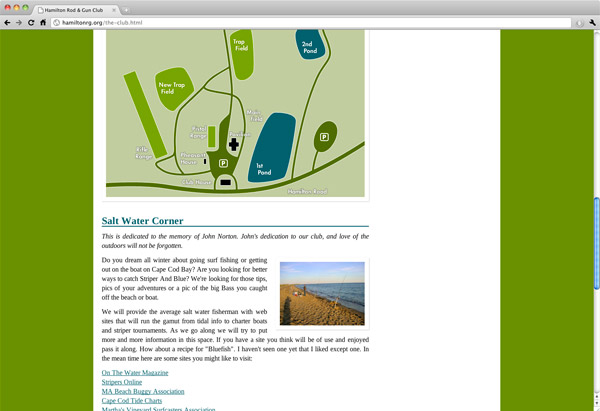
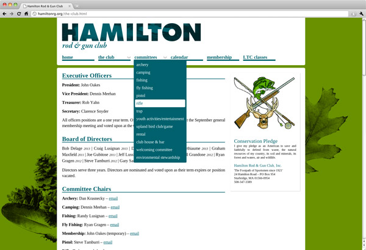

hamilton rod & gun club

This project allowed me to redesign the website skin for the Hamilton Rod & Gun Club, located in Sturbridge, MA. Their existing website was built from an outdated and disorganized HTML template. Every time information was added to the site a new link was placed in a column on the home page and the new page was given a completely different appearance from anything else on the site. I consolidated all the pages into a global navigation area with 6 main options and simplified the layout and appearance. This makes it much easier to find what you are looking for.
I also redesigned several existing pieces of content, such as their land & site map, and created a heirarchy of headings and other styles so that when new content is added to the site it fits into a logical place and shares a consistent look and feel with the rest of the site. Because this project was just to redesign the look and feel, several existing pieces of content have remained as is. This mostly involves PDFs which do not fit the look and feel, but are now linked to instead of displayed in a frame.
The new site is live here. Clicking will open it in a new window/tab.